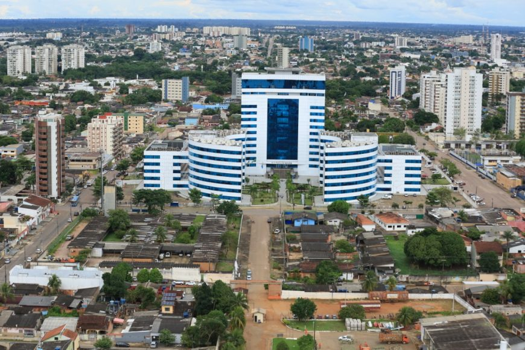

Rondônia fica na Região Norte do Brasil e tem Porto Velho como capital. O estado é coberto por parte da Floresta Amazônica, mas também tem áreas de cerrado. A economia de Rondônia é baseada na agropecuária, com destaque para a produção de soja, milho e criação de gado, além da extração de madeira e minerais. A região tem uma cultura diversificada, influenciada por migrantes de várias partes do Brasil. O clima é quente e úmido, típico da Amazônia.
